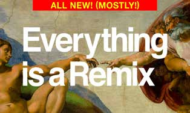
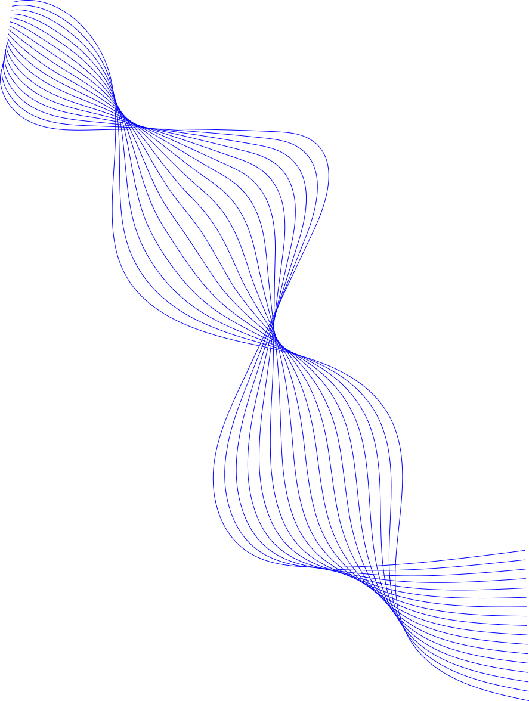
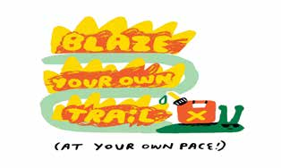
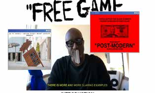

Everything Is a Remix
Kirby Ferguson
Een eye-opening documentaire over
de geschiedenis en culturele
betekenis van sampling en
creatieve samenwerking.



Kirby Ferguson
Een eye-opening documentaire over
de geschiedenis en culturele
betekenis van sampling en
creatieve samenwerking.

Andy J. Pizza (2023)
A process for using creative
influences to find a unique path
for yourself.

Virgil Abloh (2020)
Een gratis, open-access
mentorprogramma en online leerplatform
om jonge creatievelingen te leren hoe
ze vanaf nul een eigen kleding- of
creatief merk kunnen opbouwen.
Aanvullende verwijzingen bij het manifest en de encyclopedie:
Deze websites en hulpmiddelen hebben geholpen bij het leren, maken en verbeteren van de website.